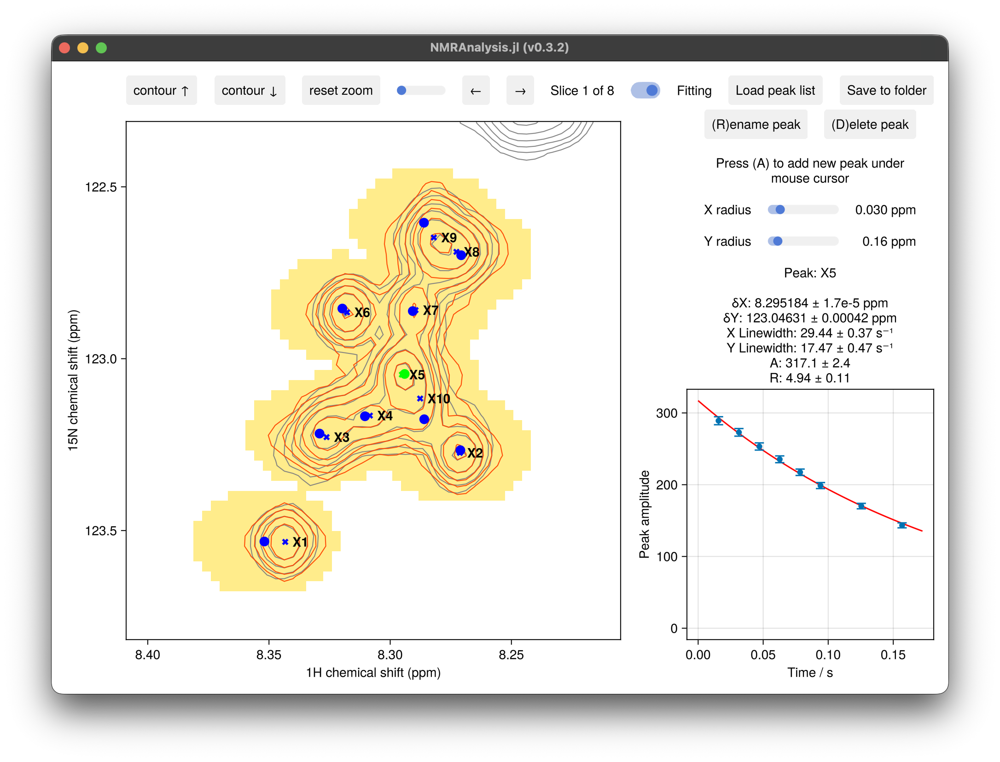

Relaxation Analysis (T1 / T2)
The relaxation2d function measures R1 or R2 relaxation rates from a series of 2D spectra recorded with increasing relaxation delays. Peak amplitudes are fitted to a mono-exponential decay:
\[I(\tau) = A \exp\!\left(-R\tau\right)\]
where $R$ is the relaxation rate (s⁻¹) and $A$ is the peak amplitude. The software does not distinguish between R1 and R2 — the appropriate interpretation depends on the experiment used to collect the data.

Usage
using NMRAnalysis
# Inline relaxation delays (in seconds)
relaxation2d(
["11/pdata/1", "12/pdata/1", "13/pdata/1", "14/pdata/1", "15/pdata/1"],
[0.010, 0.030, 0.060, 0.100, 0.200]
)
# Read delays from a text file (one value per line; lines beginning with # are ignored)
relaxation2d(
["11/pdata/1", "12/pdata/1", "13/pdata/1"],
"vclist.txt"
)
# Omit a specific plane from the fit (e.g. a corrupted or duplicate delay)
relaxation2d(
["11/pdata/1", "12/pdata/1", "13/pdata/1", "14/pdata/1", "15/pdata/1"],
[0.010, 0.030, 0.060, 0.100, 0.200];
skipplanes=[3]
)The number of input spectra must match the number of relaxation delays.
Excluding planes from the fit
If one or more planes in the series should not contribute to the fitted rate — for example because a delay was accidentally repeated, or a spectrum was recorded under slightly different conditions — pass their 1-based indices via skipplanes:
# CCR buildup experiments often acquire more scans for the first planes;
# ns normalisation handles the amplitude, but a noisy or outlier plane can still
# be excluded:
relaxation2d(files, delays; skipplanes=[1, 5])All spectra are still loaded and displayed. Skipped planes appear as open grey markers in the peak-fit plot and are labelled [skipped] in the slice title; they are not used when fitting R or A. The full delay list, including times for the skipped planes, must always be supplied.
Output
Clicking Save to folder writes all results to results.csv. Alongside peak positions, linewidths and the amplitude for each delay, the derived columns are:
| Column | Description |
|---|---|
R, R_err | Fitted relaxation rate R (s⁻¹) and uncertainty |
A, A_err | Fitted amplitude A and uncertainty |
The rate is labelled generically as R; the software does not distinguish R₁ from R₂. See Peak Lists and Output Files for the full format.
Plot R against residue number with summaryplot. Pass an appropriate ylabel to label the axis for your specific experiment:
# T2 / R2 measurement
fig = summaryplot(expt; ylabel="R₂ / s⁻¹")
fig = summaryplot("results/"; param=:R, ylabel="R₂ / s⁻¹")
# T1 / R1 measurement
fig = summaryplot(expt; ylabel="R₁ / s⁻¹")Noise Estimation
Peak amplitude uncertainties are estimated from the scatter of the spectral noise across the series of experiments.